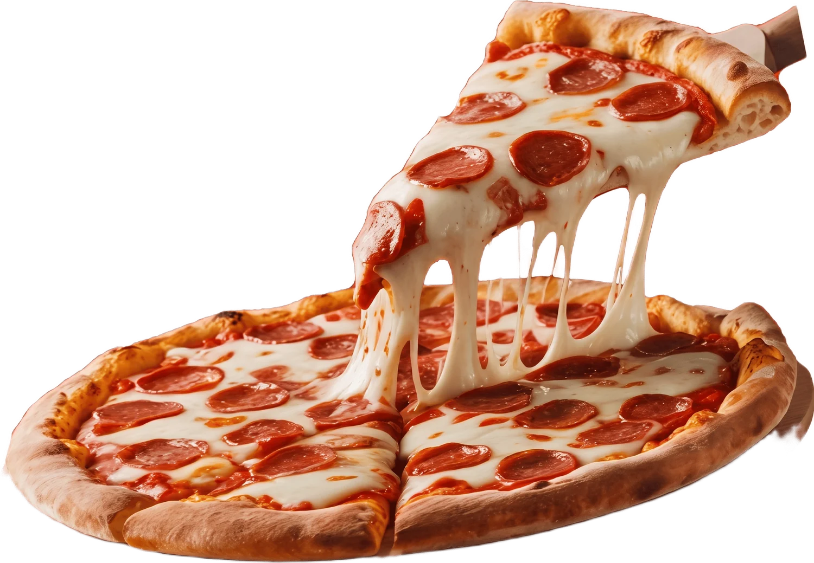

DEU PIZZA
Deu Pizza Pizzaria
Massa artesanal que descansa por 48 horas, mussarela fresca e tomates amassados à mão. Assada em forno a lenha e entregue quentinha na sua porta.

Pizzas
Com fome? Venha nos visitar.
Venha até nós, ligue ou peça online. Cada pizza sai do forno a lenha poucos minutos antes de chegar à sua mesa.
-
Endereço
Rua Pinheiro do Paraná
Paratibe · João Pessoa, PB
CEP 58062-305 - Horário Todos os dias · 11h às 23h
- Telefone (11) 4000-0000